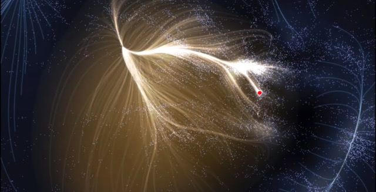
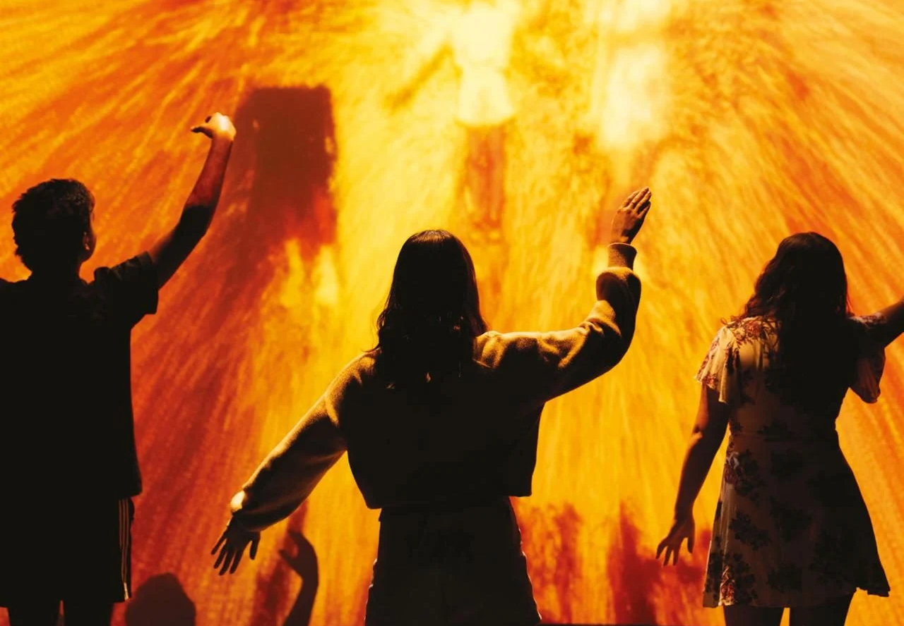
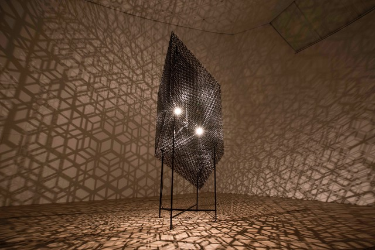
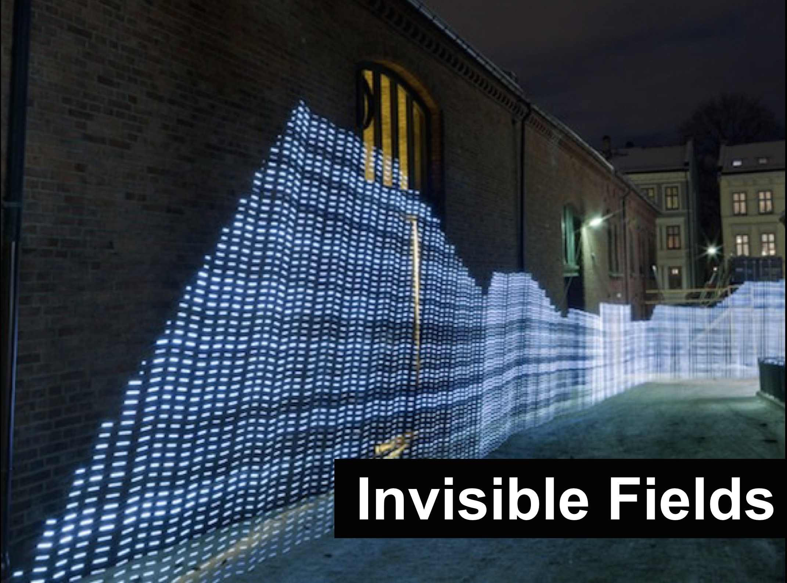

Essays & Publications
I write regularly about art, science, museums, cosmology, and ideas — longer essays, notes from talks, and reflections on exhibitions past and present.
honorharger.wordpress.comOver the past decade, I have written over 30 essays and articles spanning cosmology, quantum physics, ecology, and the future of museums, published across books, catalogues, and long-form research, with selected examples below.
Forms of Life: Curating Encounters Beyond the Human
A long-form essay setting out the intellectual framework behind the Forms of Life: Beyond the Human season at ArtScience Museum. Drawing on Ed Yong, Anna Tsing, Donna Haraway, and contemporary AI philosophy, it argues for a curatorial practice that de-centres the human and takes seriously the perceptual worlds of insects, ocean creatures, and artificial intelligences.
Read →
It's All Really There: The Electromagnetic Life of the Universe
An essay tracing the long arc of a practice rooted in the electromagnetic spectrum, from the early work of r a d i o q u a l i a through to exhibitions such as Invisible Fields. It reflects on what it means to make perceptible a world that surrounds us constantly but lies beyond the reach of human senses.
Read →
Reading the Cosmic Web: Pattern, Perception, and Phenomorphic Form
A long-form essay prompted by cosmologist Mark Neyrinck's writing on the large-scale structure of the universe, exploring how pattern, form, and perception connect artistic and scientific ways of reading the cosmos.
Read →Sustainable Futures: On Curating Ecological Imagination
An essay reflecting on more than a decade of curating work at the intersection of environmental science and artistic practice, arguing that museums can be powerful agents of ecological orientation.
Read →
Experiential Futures as a Bridge to Foresight Practice at ArtScience Museum
Book chapter · Cultivating Futures Thinking in Museums, ed. Kristin Alford, Routledge, 2024
A contribution to the first major academic anthology on futures thinking in museums, arguing that cultural institutions have a distinctive responsibility to bridge the gap between abstract possible futures and embodied present experience.

Intersecting Narratives: The Confluence of Science Fiction and Asian Spirituality in Contemporary Art Practice
Catalogue essay · New Eden: Science Fiction Mythologies Transformed, ArtScience Museum, co-written with Gail Chin, Joel Chin, and Adrian George
An essay arguing that Western science fiction and Eastern spiritual philosophy share deeper common ground than is usually acknowledged, finding synchronicities between speculative ideas and ontological concepts embedded in Buddhism, Hinduism, and Shintoism.

An Artistic Voyage Through the Cosmos
Catalogue essay · The Universe and Art, Mori Art Museum / ArtScience Museum
An essay introducing an exhibition that placed art, mythology, philosophy, and cosmological science in direct conversation across 120 works spanning ancient and contemporary perspectives.

There, But Invisible: Exploring the Contours of Invisible Fields
Catalogue essay · Invisible Fields: Geographies of Radio Waves, Arts Santa Mònica, Barcelona, co-written with José Luis de Vicente
Published alongside essays by Douglas Kahn, Adam Greenfield, Martin Howse, and Josep Perelló, this essay introduced the exhibition's central proposition: that the radio spectrum, invisible yet omnipresent, is the defining infrastructure of contemporary life.